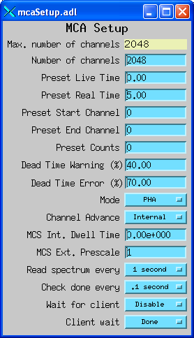

mca supports Multi-Channel Analyzers (hence the name), and also related devices such as multi-channel scalers (MCS), waveform digitizers, and programmable ADCs, amplifiers and power supplies.
mca consists of:
A basic interface to the mca record is provided with medm. These screens allow one to control acquisition, view spectra on a linear or logarithmic scale. There are no markers or cursors, or tools for energy calibration or peak fitting.
medm mca record screen.
There is a setup window for controlling preset count times, update rates, etc.
medm mca setup screen.

An IDL MCA display program is available, shown in the screen show below. This program is available in both a source code version that requires and IDL license to run, and also in a pre-compiled form that can be run under the IDL Virtual Machine for free. It provides tools for energy calibration and peak fitting.
IDL MCA display.

Another IDL tool is provided for controlling multi-elemement detectors (MED). This screen allows one to display one spectrum at a time in the IDL MCA display tool above, and to turn off and on acquisition simultaneously on all detectors.
The IDL MCA display and multi-element display tools have also been ported to Python. With the advent of the IDL Virtual Machine that allows IDL programs to be run for free I am no longer actively working on the Python versions, but it is available.